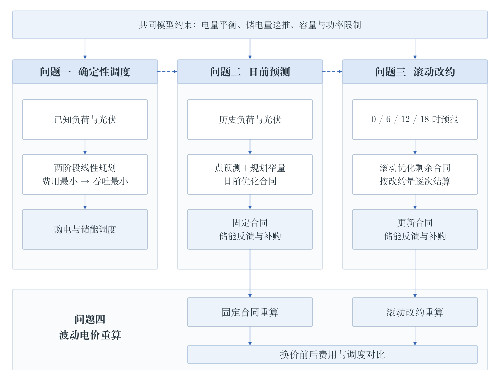
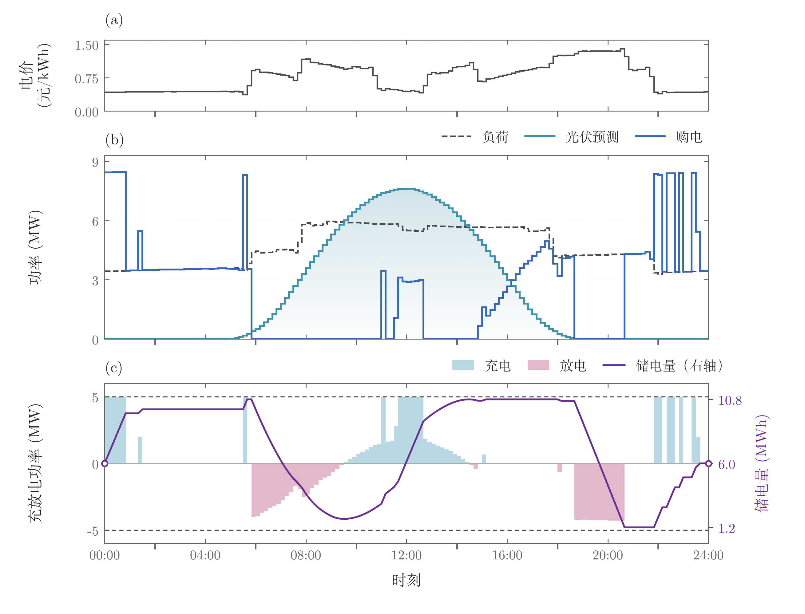
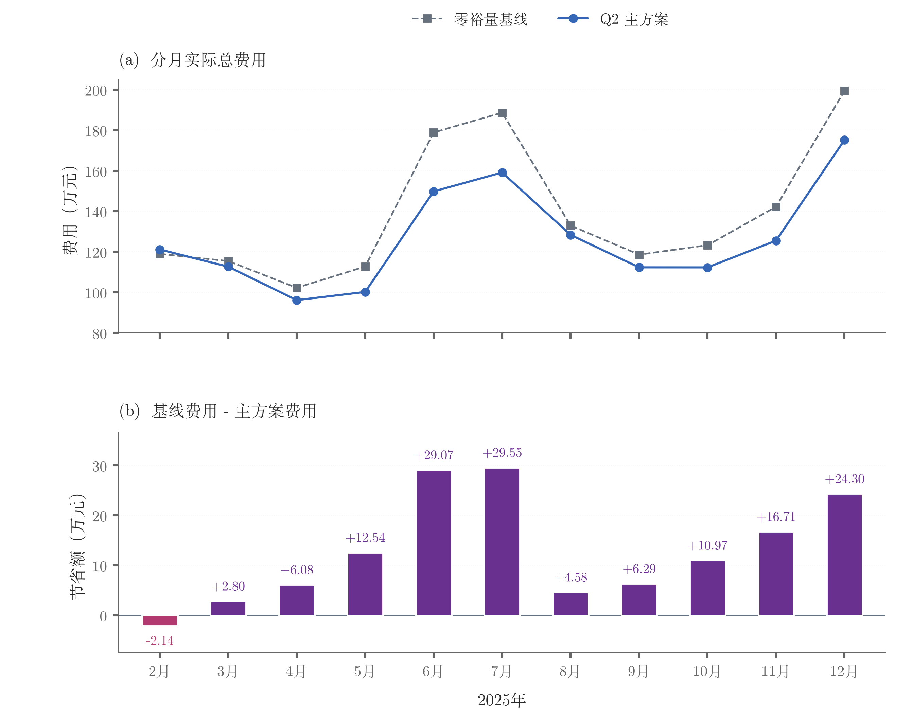
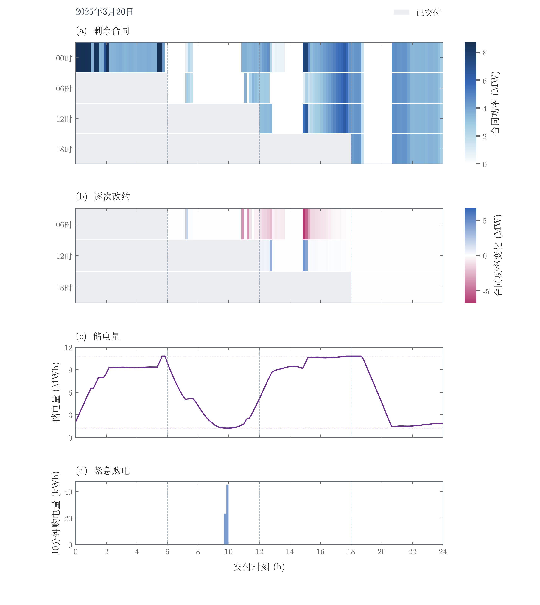
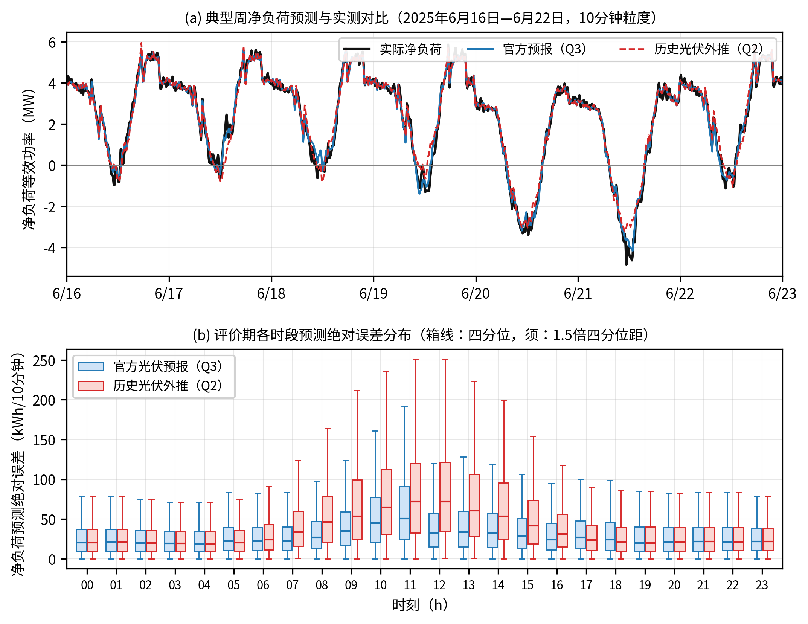
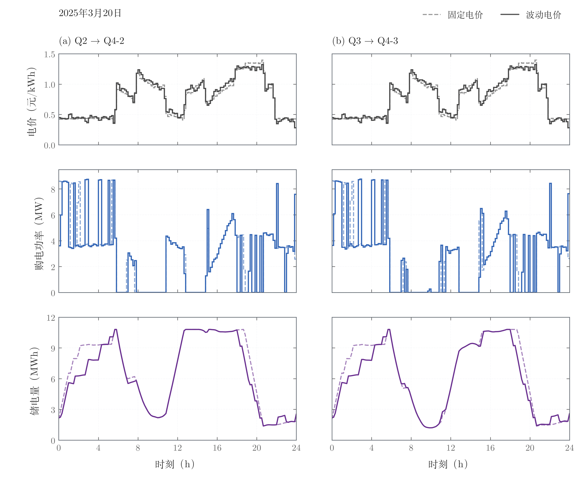

基于两级线性规划与滚动调整的
微网购电及储能调度
光伏出力与用电负荷在时间分布上错位，必须依靠外网购电与储能调节维持供需平衡。 本项目构建「两级线性规划 + 风险裕量 + 滚动改约 + 实时反馈」的统一调度框架， 在同一套约束下求解典型日优化、日初固定采购、日内滚动改约与波动电价四类决策场景， 在 2025 年 2—12 月共 334 天 / 48,096 个 10 分钟时段上完成全量计算与独立核验。
✔ CI 结果核对通过 701,026 项数值检查 最大绝对差异 2.24e-08 仅用 Python 标准库即可核对
四问结果速览
五份提交工作簿既是结果，也是重算时的格式基准；重算只写入新目录，永不覆盖提交值。
四条核心结论
全部结论都带有对照方案与显著性检验，包括"并非每月占优"这类反向结果。
- 储能的价值来自时序转移，而不是少买电。问题一费用降幅 26.90% 远大于购电量降幅 3.73%： 储能吸收 6,247.96 kWh 富余光伏，放电量达到充电量的 0.81 倍，充放电损耗 3,940.73 kWh。
- 风险裕量以"更多正常采购"换取"更少高价补购"。问题二合同购电费增加 1,112,028.68 元， 紧急购电费减少 2,519,330.08 元，净省 1,407,301.40 元；两方案预测精度完全相同 （净负荷 MAE 43.97 kWh/时段），说明节费来自采购安排与储能运行，而非预测更准。
- 滚动改约的收益集中在午间新增预报。四时点方案比仅 0 时方案节省 275,921.60 元（1.96%）； 改约可能"净减购却净支出"，结算必须逐时段、逐次计费。
- 预测更准 ≠ 费用更低。官方光伏预报把净负荷 MAE 从 43.97 降到 34.54 kWh/时段， 但其合同购电与调整费用高 27.49 万元，紧急购电费只低 2.70 万元，总费用反而高 24.79 万元。
论文图表
点击图片可查看原始分辨率（另有 全部 18 张插图）。












方法：两级线性规划
先买得最省，再在费用不变的前提下少折腾储能——不需要整数变量。
两级求解
第一级最小化购电费用；第二级在 1e-6 元容差内最小化规划充放电总量。论文证明：
在允许无成本弃置时，同时充放电总能被"少充少放"的等价解替换而不改变平衡与费用，
因此第二级最优解自动满足互斥条件 c·r = 0，模型保持线性，可直接用 HiGHS 高效求解。
日初模型 720 个变量 / 288 个等式约束，6 时滚动模型 864 个变量 / 324 个等式约束， 评价期 334 天每天多次求解。
关键参数
- 时段粒度
- Δt = 1/6 h，144 时段/日
- 储能容量
- 12,000 kWh（限值 1,200 / 10,800）
- 充放功率
- 5,000 kW（单时段 ≤ 833.33 kWh）
- 效率
- η_c = η_d = 0.90
- 风险分位数
- α = 0.80（线性插值经验分位数）
- 日末价值
- γ = 0.5 × η_d × 电价中位数
- 紧急购电
- 交易时刻电价的 5 倍
- 改约结算
- 增购 1.5 倍 / 减购净退 0.5 倍
- 评价期
- 2025-02-01 — 12-31，334 天
一键复现
需要 64 位 Python 3.11–3.13。核对流程只用标准库，几秒即可完成。
git clone https://github.com/lyrawinslet/microgrid-storage-dispatch.git
cd microgrid-storage-dispatch
python run.py --task verify # 核对已提交的五份结果：701,026 项数值检查，约 10 秒
python run.py --setup # 在仓库内创建 .venv 并安装固定版本依赖（首次需联网）
python run.py --task full # 全量重算四问与全部对照检验，输出到 rerun/<时间戳>/- 重算一律写入新建的
rerun/<时间戳>/，不会覆盖仓库中五份提交结果； - 依赖固定为
numpy==2.3.5、scipy==1.17.0、pandas==2.2.3、openpyxl==3.1.5； - 仓库结构、数据字段与每份结果工作表说明见 docs/数据与结果说明.md；
- AI 工具使用与人工核验说明见 docs/AI工具使用详情.pdf。